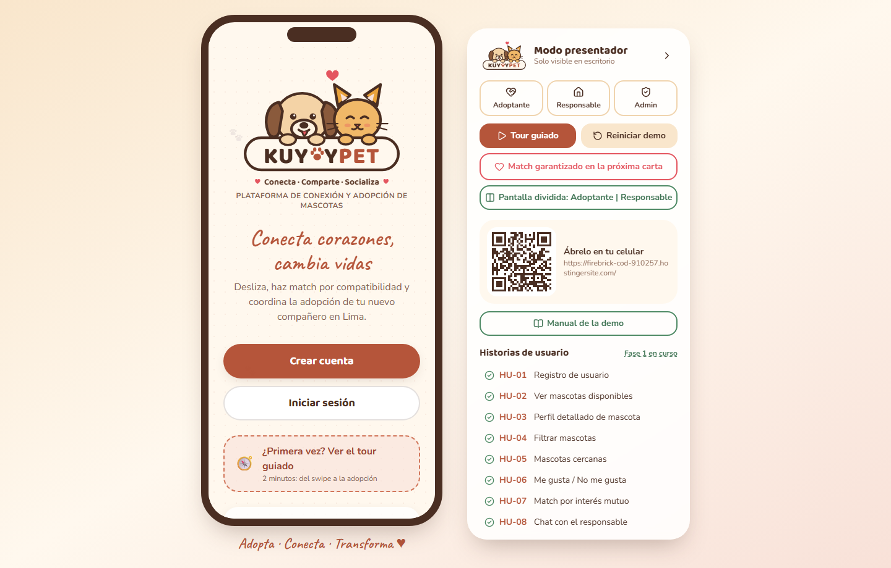
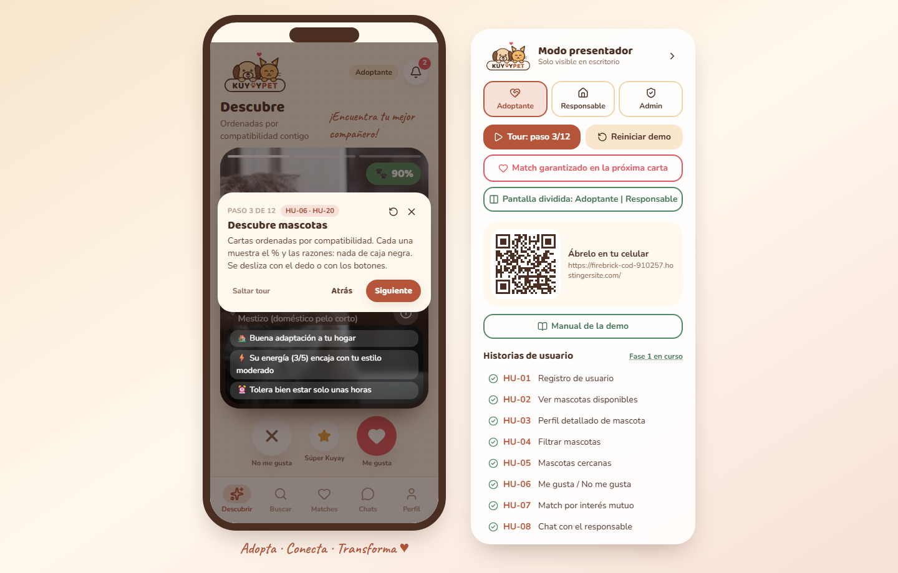
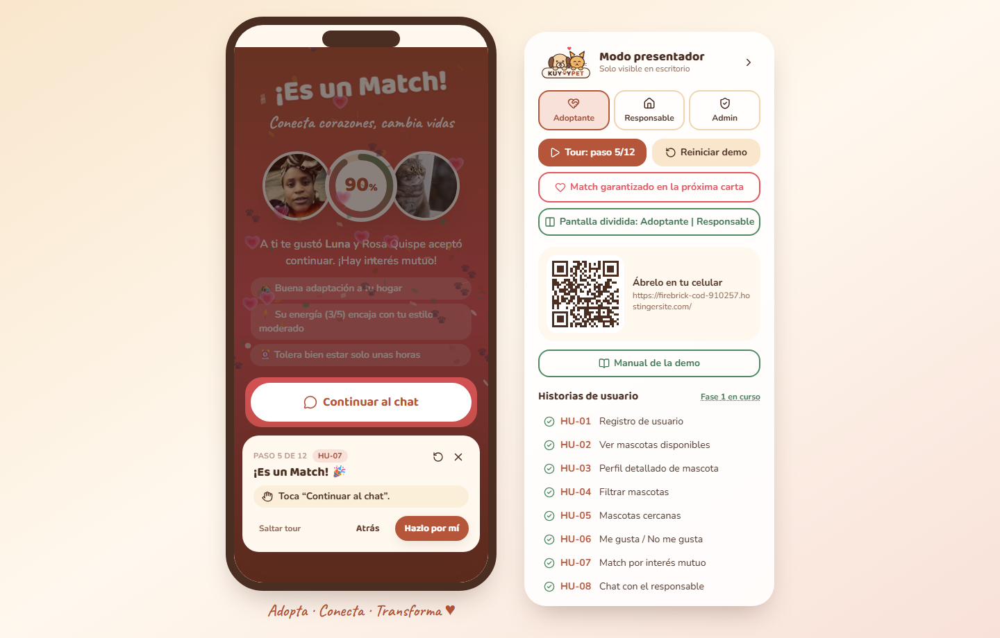
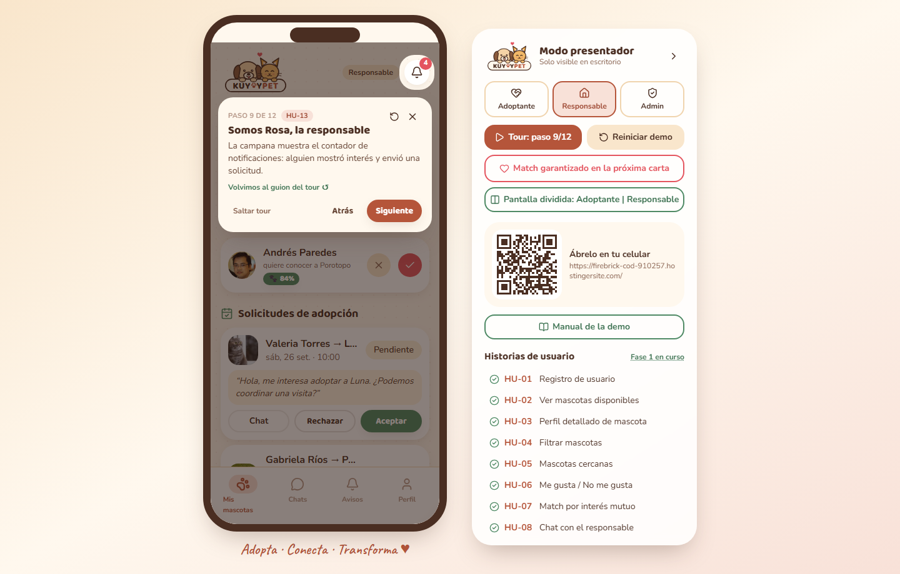
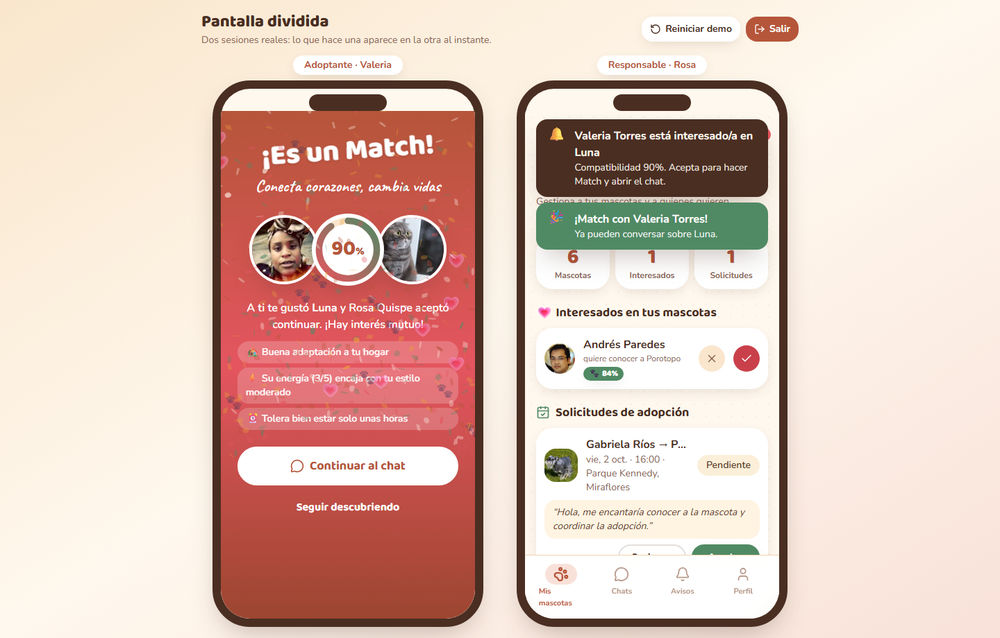

Manual de la demo · KuyayPet
Para el presentador. Ingeniería de Software · UPCH 2026-2.
Link principal: https://firebrick-cod-910257.hostingersite.com/
Espejo (plan B): https://ichisieben.github.io/kuyaypet/
Cuentas demo (contraseña kuyay2026): adoptante@kuyaypet.pe (Valeria) · responsable@kuyaypet.pe (Rosa) · admin@kuyaypet.pe
1. Preparación antes de clase (5 min)
- Abre el link principal en Chrome de escritorio y pon pantalla completa (F11). A partir de 1024 px de ancho aparecen el marco de celular y el panel de presentador a la derecha.
- En el panel pulsa Reiniciar demo: vuelven los datos semilla y se cierra la sesión.
- Prueba el QR del panel con tu celular: debe abrir la misma app a pantalla completa. Esa es la invitación para que la clase la abra.
- Deja el zoom del navegador en 100 %. Si el proyector es de baja resolución, prueba con 90 % (Ctrl −).
- Sin internet: abre la app una vez con internet antes de clase. Es una PWA: queda en caché con fotos y fuentes incluidas. Si el aula no tiene red, recarga igual y funcionará desde la caché. Como respaldo extremo, usa las capturas de este manual.
- Teclado: durante el tour, → avanza, ← retrocede y Esc sale (y deja todo como estaba antes del tour).

2. Guion del tour (5–7 min)
Pulsa Tour guiado en el panel. El tour guarda lo que tenías abierto, carga los datos semilla y fija a Luna (la gata de Rosa) como primera carta. La tarjeta del tour dice “Paso N de 12” y nunca tapa lo que explica; el panel también muestra el paso.
- Pasos de explicación: pulsa Siguiente (o →).
- Pasos de acción (4, 5, 7, 10 y 11): la tarjeta te pide el gesto real (“Toca ♥ Me gusta en Luna”). Solo ese botón responde; el resto de la pantalla está bloqueado. Si prefieres no hacerlo, pulsa Hazlo por mí. Si pasan 30 s, la pista parpadea para recordártelo.
- Si algo se sale del guion (cambias de rol en el panel, navegas a mano), el tour vuelve solo al paso correcto y muestra “Volvimos al guion del tour ↺”.
- Atrás deshace también los datos de ese paso. ↺ (arriba) reinicia el tour. Saltar tour, ✕ o Esc salen y restauran lo que tenías antes.
| # | Qué pasa en pantalla | Qué digo (1–2 frases) | HU | ≈ tiempo |
|---|---|---|---|---|
| 1 | Pantalla de inicio con los botones de rol | “KuyayPet es un Tinder para adoptar: la información de adopción en Lima está dispersa; aquí se centraliza y se conecta por compatibilidad.” | HU-01 | 40 s |
| 2 | Cuestionario tipo Bumble | “Primero conocemos al adoptante: vivienda, horas que pasa fuera, actividad, niños, alergias. Una pregunta por pantalla.” | HU-20 | 40 s |
| 3 | Deck con Luna, % y razones | “Cada carta muestra el porcentaje y por qué: distancia, vivienda, energía. Nada de caja negra.” | HU-06, HU-20 | 40 s |
| 4 | Se resalta Me gusta: tócalo (o Hazlo por mí) | “Un like no es un Match: avisa al responsable. El Match solo ocurre con interés mutuo.” | HU-06 | 20 s |
| 5 | ¡Es un Match!: anillo de compatibilidad, razones y confeti de huellas. Toca Continuar al chat | “Rosa aceptó. Aquí la aceptación está simulada; en la fase 2 la hace una persona real desde su celular.” | HU-07 | 30 s |
| 6 | Chat con Luna: se envía un mensaje y Rosa responde | “El chat queda vinculado a la mascota y se guarda el historial.” | HU-08 | 30 s |
| 7 | Formulario Coordinar adopción: toca Enviar solicitud | “Desde el chat propongo fecha y hora para conocer a Luna.” | HU-10 | 20 s |
| 8 | ¡Solicitud enviada! con estado Pendiente | “Veo el estado: pendiente, aceptada o rechazada. Ahora cambiemos de lado.” | HU-10 | 15 s |
| 9 | Somos Rosa: se resalta la campana con el contador | “La responsable recibe la notificación al instante.” | HU-13 | 30 s |
| 10 | Rosa acepta la visita: toca Aceptar y confirma | “Acepta, y Valeria recibe la confirmación en el chat.” | HU-10, HU-13 | 20 s |
| 11 | Admin aprueba una publicación pendiente: toca Aprobar y confirma | “Toda mascota nueva pasa por moderación: así evitamos ventas encubiertas (Ley 30407).” | HU-24 | 30 s |
| 12 | Créditos del equipo | “Escaneen el QR y pruébenlo en su celular.” | — | 20 s |



3. Recorrido libre por rol
Cambia de rol con los tres botones del panel (Adoptante · Responsable · Admin). Al cambiar, entras directo con la cuenta demo de ese rol.
Adoptante (Valeria)
- Descubrir: desliza con el mouse o usa ✕ / ⭐ / ♥. El botón Match garantizado en la próxima carta del panel asegura que el siguiente like termine en Match.
- Buscar: grilla con Filtros (especie, raza, edad, sexo, tamaño; HU-04) y Buscar por cercanía (distrito o ubicación actual, radio en km, lista o mapa; HU-05).
- Perfil de mascota: fotos, “¿Por qué hacemos match?”, favoritos, Unirme al chat de la mascota (grupal, HU-09), Reportar y Coordinar (HU-03, HU-10).
- Perfil: Favoritos (HU-17), Historial de interés (HU-18), Guía de adopción con buscador (HU-14) y cerrar sesión (HU-21).
- Login → ¿Olvidaste tu contraseña?: el código llega a una bandeja de correo simulada (HU-15).
Responsable (Rosa)
- Registrar mascota en 3 pasos: datos, fotos con vista previa y etiquetas, e historia y salud (HU-11, HU-16). Queda En revisión hasta que el admin la aprueba.
- Editar información (HU-12) y Marcar como adoptada (HU-19) desde Mis publicaciones.
- Interesados con su % (aceptar = Match) y solicitudes de visita (aceptar o rechazar).
- Avisos: al tocar una notificación se abre el perfil del adoptante o el chat de esa solicitud (HU-13).
Administrador
- Resumen: KPIs contra las metas del caso de negocio (500 usuarios, 200 matches, 60 % activos) y publicaciones pendientes (HU-24).
- Usuarios: buscar, filtrar, editar y desactivar o reactivar (una cuenta desactivada no puede entrar; HU-22, HU-25).
- Publicaciones: revisar y editar todas (HU-23).
- Reportes: ocultar la publicación, desactivar la cuenta o descartar (HU-26).
Pantalla dividida (escritorio): en el panel, Pantalla dividida: Adoptante | Responsable muestra dos celulares con sesiones reales. El “Me gusta” de Valeria aparece al instante en el celular de Rosa, y cuando Rosa acepta, a Valeria le salta el Match. Es la mejor forma de explicar el interés mutuo. Salir vuelve a la vista normal.

4. Qué es simulado y cómo explicarlo
| Pregunta posible | Respuesta corta |
|---|---|
| ¿Dónde está la base de datos? | “En esta fase los datos viven en el navegador (localStorage), detrás de una capa de servicios. La fase 2 cambia esa capa por Supabase sin tocar las pantallas.” |
| ¿Quién acepta los likes? | “Responsables simulados con una probabilidad y un retardo; Rosa, la responsable demo, acepta a mano en el tour.” |
| ¿Cómo se sincronizan los dos celulares? | “Comparten la base de datos del navegador y se avisan con el evento storage. En la fase 2 ese canal será Supabase Realtime.” |
| ¿Y el chat? | “Los mensajes se guardan de verdad; las respuestas del responsable son plantillas. En la fase 2 será tiempo real.” |
| ¿Y el correo de recuperación? | “Simulado: se ve en una bandeja dentro de la app. Con backend se enviaría de verdad.” |
| ¿Login con Google? | “Selector simulado. Con un Client ID se usa Google Identity Services, pero sin backend no se puede verificar el token, por eso no lo activamos.” |
| ¿El % es confiable? | “Son pesos heurísticos y explicables. La fase 2 los calibra con adopciones reales.” |
| ¿Es seguro? | “Es un prototipo: las contraseñas demo están en el navegador. La fase 2 usa Supabase Auth con permisos por fila.” |
Siguiente fase: backend Supabase (auth, Postgres y chat en tiempo real), app Flutter y módulo Comunidad (paseos y playdates).
5. Plan B
- Algo raro en pantalla: pulsa Reiniciar demo en el panel y vuelve a lanzar el tour.
- El tour se trabó: pulsa Esc para salir y luego Tour guiado otra vez (siempre empieza desde cero).
- La página no responde: recarga (F5). Los datos se conservan.
- Hostinger caído: usa el espejo https://ichisieben.github.io/kuyaypet/
- Sin proyector ni internet: muestra las capturas de este manual.
6. Trazabilidad HU → pantalla → tour
| HU | Pantalla (ruta) | Paso del tour | Estado |
|---|---|---|---|
| HU-01 Registro | /registro, /login |
1 | Lista |
| HU-02 Mascotas disponibles | /buscar |
— | Lista |
| HU-03 Perfil de mascota | /mascota/:id |
— | Lista |
| HU-04 Filtros | /buscar → Filtros |
— | Lista |
| HU-05 Cercanía | /buscar → Buscar por cercanía |
— | Lista |
| HU-06 Me gusta / No me gusta | /descubrir |
3–4 | Lista |
| HU-07 Match | overlay + /matches |
5 | Lista |
| HU-08 Chat | /chats/:id |
6 | Lista |
| HU-09 Chat grupal | perfil → Unirme al chat | — | Lista |
| HU-10 Coordinar adopción | /coordinar/:id |
7–8, 10 | Lista |
| HU-11 Registrar mascota | /responsable/nueva |
— | Lista |
| HU-12 Editar mascota | /responsable/editar/:id |
— | Lista |
| HU-13 Notificaciones | campana, /notificaciones |
9 | Lista |
| HU-14 Guía de adopción | /guia |
— | Lista |
| HU-15 Recuperar contraseña | /recuperar |
— | Lista (correo simulado) |
| HU-16 Fotos y etiquetas | /responsable/nueva (paso 2) |
— | Lista |
| HU-17 Favoritos | /favoritos |
— | Lista |
| HU-18 Historial | /historial |
— | Lista |
| HU-19 Marcar adoptada | /responsable |
— | Lista |
| HU-20 Compatibilidad | /onboarding, /matches |
2–3 | Lista |
| HU-21 Cerrar sesión | /perfil |
— | Lista |
| HU-22 Gestionar usuarios | /admin/usuarios |
— | Lista |
| HU-23 Revisar publicaciones | /admin/publicaciones |
— | Lista |
| HU-24 Aprobar / rechazar | /admin |
11 | Lista |
| HU-25 Desactivar cuentas | /admin/usuarios/:id |
— | Lista |
| HU-26 Reportes | /admin/reportes, perfil → Reportar |
— | Lista |